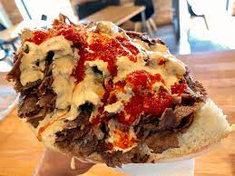

Kebab
W Polsce słowo kebab oznacza zazwyczaj döner kebap (w języku tureckim „obracające się pieczone mięso”), czyli danie kuchni tureckiej[1] w postaci odpowiednio doprawionego mięsa baraniego (w tym jagnięcego)[potrzebny przypis], skrawanego z pionowego rożna, podawane z surówką warzywną i owczym serem, współcześnie przekształcone w danie typu fast food. Ze względu na ceny baraniny oraz preferencje smakowe Polaków, mięso w polskim kebabie to zwykle wołowina lub kurczak, jedynie z dodatkiem baraniny[2]. Nie może to być mięso wieprzowe, co wynika z Halalu. Podawane jest w macy, picie, tortilli lub bułce z różnymi sosami – łagodnymi lub ostrymi. Wartość odżywcza dla 100 gramów typowego polskiego kebabu wynosi około 170 kilokalorii[3].
W Niemczech potrawę tę określa się najczęściej jako kebap lub döner (w języku tureckim „obracający się”), odmianę zaś w placku lawasz jako dürüm lub jufka (kebab w cienkim cieście). Wariantem kebabu w cienkim cieście jest Lahmacun, niekiedy również określany jako turecka pizza (Türkische Pizza). Różnice w stosunku do jufki polegają na tym, że cienkie ciasto pokryte jest sosem i przyprawami, które upodobniają tę formę zawijanego kebabu do innej tureckiej potrawy – Lahmacun.
W krajach arabskich, Armenii, Izraelu i Iranie słowo kebab oznacza najczęściej nie döner kebab, lecz şiş kebab (w języku tureckim „pieczone mięso na szpikulcu”), czyli szaszłyk z pieczonego, często mielonego mięsa. Takie nazewnictwo stosuje się więc czasem także w Polsce, w barach szybkiej obsługi i restauracjach prowadzonych przez Arabów, Turków lub Persów.
Powszechne jest jedzenie kebabu razem z ajranem.
